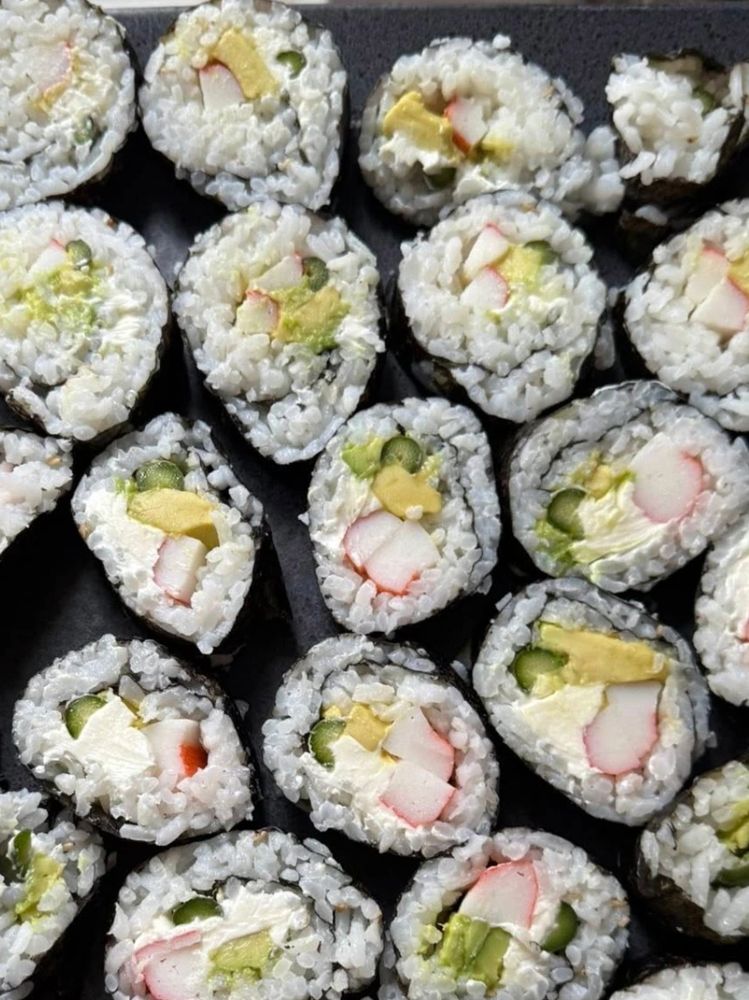

Simple Sushi Rolls
Description
These easy, delicious sushi rolls combine creamy, savory flavors with fresh crunch. Made with crab, cream cheese, and crisp veggies, they’re perfect for sushi beginners or fun family nights.
Ingredients
- ½ block cream cheese
- ½ package imitation crab (or real crab if preferred)
- ¼ cup shredded carrots
- ⅓ cucumber, peeled and sliced into thin strips
- 2 cups sticky rice (sushi rice)
- 3 sheets seaweed (nori)
- Bamboo sushi roller or parchment paper (for rolling)
- Sauces of your choice, We like unami sauce.
Instructions
- Cook the sticky rice according to the package instructions. Let it cool for 15 minutes before handling.
- Place a bamboo sushi roller or a sheet of parchment paper on a clean surface.
- Lay one sheet of seaweed (nori) on top of the bamboo or parchment, shiny side down.
- Spread a thin, even layer of rice over the seaweed, covering corner to corner. Leave a 1-inch space at the top edge for sealing the roll.
- Arrange the cream cheese, crab, carrots, and cucumber about ⅓ of the way up from the bottom of the seaweed sheet (on the edge closest to you).
- Using the bamboo or parchment as support, tightly roll the seaweed from the bottom upward, pressing gently to form a firm roll.
- Seal the roll by lightly wetting the edge of the seaweed with water. Let the roll rest for 1–2 minutes before slicing.
- Slice into 6–8 bite-sized pieces with a sharp, wet knife. Serve with soy sauce, wasabi, or pickled ginger if desired.
Tips
For best results, chill the finished rolls slightly before cutting. You can also add avocado, sriracha mayo, or sesame seeds for variety.